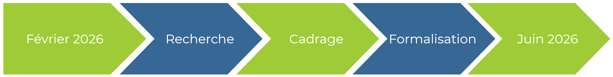
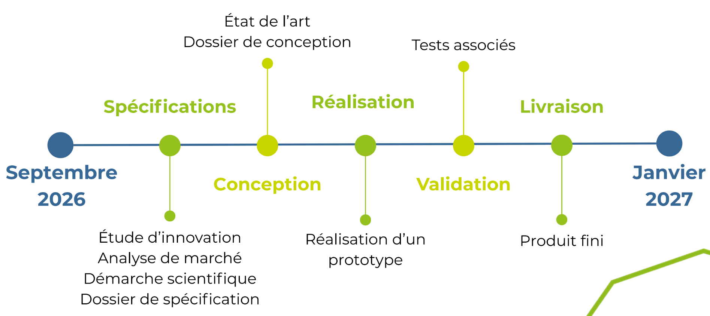
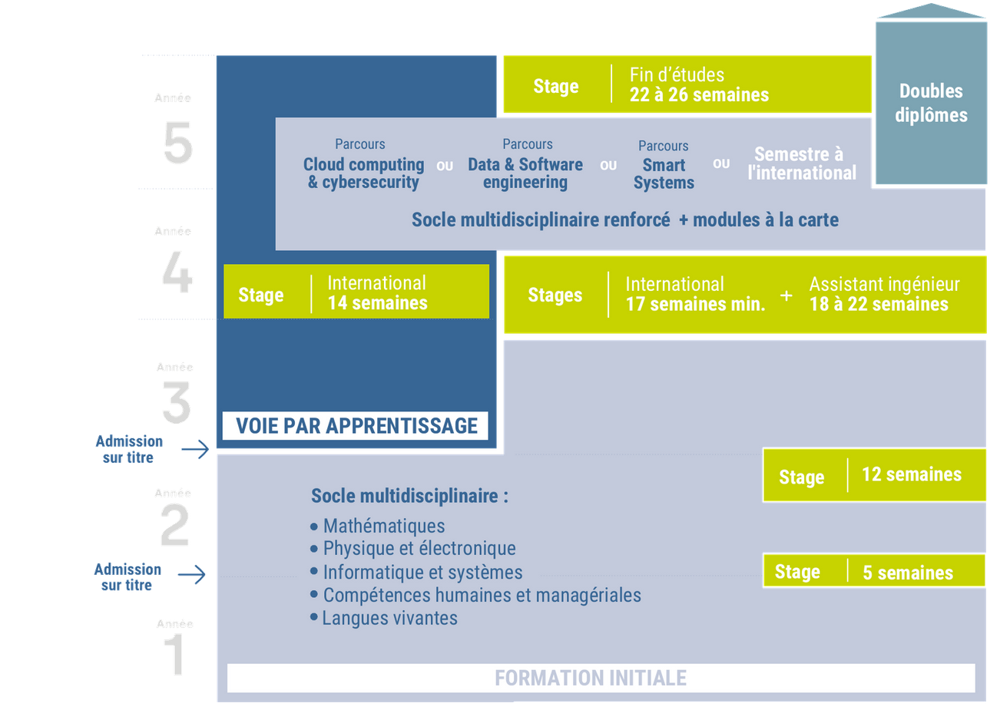

Recherche d'un Projet de Fin d'Études
Ecole d'ingénieur - IG2I de Centrale Lille Institut
Année universitaire 2026-2027
Télécharger la plaquetteMission
Nous sommes STEELA 2I, une équipe de six élèves ingénieurs à l'IG2I de Centrale Lille Institut. Dans le cadre de notre dernière année, nous sommes à la recherche d'un projet d'ingénierie dans nos domaines d'activité. C'est dans ce cadre que nous souhaitons co-construire un sujet de projet.
Ce projet se déroulera de début septembre 2026 au 31 janvier 2027 avec un investissement de 1380 heures au total par les 6 personnes de notre groupe.
Nous sommes une équipe polyvalente capable de travailler sur un projet pluridisciplinaire grâce aux diverses compétences que nous avons acquises. En effet nous avons chacun travaillé dans des domaines différents, ce qui nous confère une forte adaptabilité. C'est pourquoi nous pouvons intervenir dans les systèmes embarqués, l'IoT, la logistique, l'automatique, la gestion et le dimensionnement de flux entre applications, la modélisation de données, la data, la modélisation de systèmes et l'électronique.
Nos attentes
Désireux de renforcer et d'élargir nos compétences, nous ambitionnons de concevoir des solutions innovantes, performantes et durables, en adéquation avec les enjeux industriels actuels. Les savoir-faire acquis au cours de nos alternances et stages nous permettront de répondre efficacement aux besoins de votre entreprise, à travers un projet structuré et adapté à vos méthodes de travail.
Ce projet pourra notamment porter sur la conception de systèmes embarqués ou connectés, l'automatisation de processus, l'optimisation et la supervision de flux de données ou logistiques, ainsi que la modélisation et l'analyse de systèmes complexes. Il sera encadré par le corps académique de Centrale Lille Institut à hauteur de 50 heures et financé par l'entreprise partenaire.
Déroulement du PFE
Le projet représente 230 h/élèves soit 1380 heures de projet au total.
Phase 1
De février à juin 2026, nous prospectons pour identifier notre futur projet de fin d'études. Cette phase permet de cadrer notre mission au sein de votre entreprise par la co-rédaction d'un dossier d'expression de besoins.

Phase 2
Cette phase de mise en œuvre du projet se déroule de septembre 2026 à janvier 2027. Elle débute par un état de l'art pour optimiser les choix de conception, soutenu par une gestion de projet et une démarche qualité garantissant la fiabilité des livrables.

Notre formation
L'IG2I propose une formation d'ingénieur en informatique et informatique industrielle sur un cycle de 5 ans. Le parcours intègre un total de 20 mois d'expérience en entreprise, incluant une période de 3 à 4 mois à l'international dont la durée s'ajuste selon la voie choisie : formation initiale ou apprentissage.
L'IG2I forme des ingénieurs capables de maîtriser l'interaction constante entre l'innovation numérique et les environnements industriels. Cette expertise repose sur la conception et l'intégration de solutions numériques innovantes et responsables afin de réaliser des systèmes autonomes, embarqués et complexes, en combinant les dimensions logicielles et matérielles.

Notre équipe
Issus de la formation IG2I de Centrale Lille, nous formons un groupe pluridisciplinaire riche de nos expériences dans des domaines variés.
Sarah Deseille
J'aime relever les défis et m'investir dans des projets porteurs de sens. Ambitieuse et rigoureuse, je suis motivée par les environnements techniques exigeants. L'IoT, les systèmes embarqués et la conception de systèmes informatiques sont des domaines qui me passionnent. Mes expériences professionnelles m'ont permis d'évoluer aussi bien dans le secteur fluvial que dans l'industrie automobile.
Théophile Huyghe
Fort d'une longue expérience en milieu industriel, ma polyvalence et ma capacité d'adaptation me permettent de relever les différents défis que je peux rencontrer. Je porte un intérêt particulier aux possibilités qu'offrent l'évolutions des systèmes embarqués, l'loT et l'automatisme dans l'industrie, que j'ai pu explorer à travers différents projets.
Emeline Firmin
Passionnée par les sciences et les nouvelles technologies, je suis attirée par l'intersection entre l'informatique et l'industrie. Curieuse et motivée, j'aime relever des défis techniques. Mon parcours m'a permis de développer une compréhension des systèmes industriels et numériques. Animée par une volonté constante d'apprendre, je souhaite mettre mes connaissances au service de projets concrets.
Enzo Louvet
Grâce à mes expériences personnelles et professionnelles j'ai pu acquérir de multiples compétences dans les domaines de l'automatisation, des systèmes embarqués et de l'loT. Je me passionne tout particulièrement pour la couche hardware de ces derniers. Je sais me montrer sérieux et créatif.
Léa Camus
Curieuse et rigoureuse, j'ai consolidé mon expertise en informatique industrielle grâce à une alternance dans le secteur de la recherche. Mon objectif avec ce projet de fin d'études est d'approfondir mes compétences dans les domaines à la croisée de l'informatique et l'industrie, comme l'électronique, les systèmes embarqués ou les chaînes logistiques.
Axel Roget
En plus de mon parcours académique, ma passion pour les technologies m'a conduit à réaliser de nombreux projets. Avec une approche autodidacte et rigoureuse, j'ai découvert divers domaines, de l'informatique jusqu'à l'électronique. Je suis d'ailleurs en alternance dans le secteur de la supervision industrielle.
Contactez-nous
Nous serions ravis d'échanger avec vous sur un futur projet.
Email : steela2i@centralelille.fr
Adresse : 13 rue Jean Souvraz, 62300 Lens